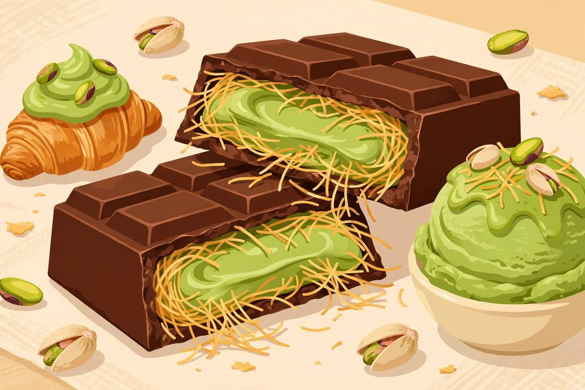

Dubai Chocolate Everything: One Crunchy Bar Ate Every Menu

$7.65 to $10.30. That is the price of pistachio kernels, per pound, across a single year of this trend, as reported to the Financial Times by a nut trader who had presumably expected a quieter career. A chocolate bar moved a commodity market. Not a harvest failure on its own, not a shipping crisis, a bar, filled with green cream and shredded pastry, that people enjoyed listening to. Somewhere in the long history of confectionery, a sweet has presumably caused a shortage before. It is harder to name one that did it largely by sounding good on a phone speaker.
That number is the honest place to start, because everything else about Dubai chocolate is theatre. The snap. The green reveal. The crunch, recorded close to a microphone like a nature documentary about a very small, very delicious landslide. Strip the theatre away and a serious little supply chain story is standing there in an apron, holding an invoice for pistachios.
The facts box: one bar, three fillings, one crunch
The original bar has a name, and the name is a pun, which already tells you it was not designed by a committee. It is called Can’t Get Knafeh Of It, and it comes from FIX Dessert Chocolatier in Dubai. Its creator, Sarah Hamouda, built it around a pregnancy craving for knafeh and pistachio, according to the BBC Travel account summarised in later coverage. Most accounts date the launch to 2021, though BBC Travel gives 2022, and the roast is content to let the two dates share a table without fighting.
The build is simple to say and fussy to make. A milk chocolate shell. A filling of pistachio cream and tahini. And the star employee, kataifi, the fine shredded pastry used in knafeh, toasted until it stays crunchy inside a chocolate bar, which is roughly as easy as keeping a snowball crunchy inside a soup. That crunch is the whole product. The chocolate is the delivery vehicle. The pistachio is the flavour. The kataifi is the sound effect, and the sound effect is what the internet bought.
For its first couple of years, almost nobody outside the United Arab Emirates could buy one at all. That scarcity turns out to be the second ingredient.
Stage one to four: how a bar became a format
Stage one is the video. In December 2023, creator Maria Vehera posted a clip of herself unwrapping and eating FIX bars in her car, and coverage credits that clip with launching the trend. The first viral clip has since been viewed more than 120 million times. One person, one car, several bars, and a crunch with excellent diction. No launch event. No billboard. A car snack with a camera on it outperformed the entire traditional advertising industry, which is still quietly processing this.
Stage two is the queue that cannot be joined. FIX sold the bar only in the UAE, through the delivery app Deliveroo, at set times, making around 500 bars a day, and the bars sold out within minutes. Consider the elegance of that trap. The whole world could watch the bar. Almost none of the world could order the bar. Desire, given no legal outlet, does what water does. It finds cracks.
Stage three is the crack, and it is shaped like every other chocolate factory on earth. Independent chocolatiers and multinational companies, including Lindt and the Turkish confectioner Ülker, produced their own versions. Then the format escaped the bar entirely. Bakeries and coffee shops added Dubai chocolate pastries, ice cream and drinks. Read that sentence again and admire the ambition. A chocolate bar became an adjective. Menus that had never contained pistachio, kataifi or any connection to Dubai began offering Dubai versions of things, the way a town renames every street after a visiting celebrity.
Stage four is the home front. People who could not buy the original started making their own and filming the results, which fed the trend a second time. The copy had copies. The format was now self catering.
The pistachio bill arrives
Every format invasion sends its invoice somewhere, and this one sent it to the nut market. Pistachio kernel prices rose from $7.65 to $10.30 per pound in a year, a rise of about 35 percent, with one trader describing the market as basically tapped out. The shortage was compounded by a poor harvest in the United States, the world’s leading pistachio exporter, and Iran sent far more of its crop to the UAE as demand climbed.
Pause on the comedy of scale here. Pistachio trees take years to mature. They did not attend the trend meeting. They cannot pivot, scale or drop a limited edition. A tree’s entire business plan is to be a tree at a steady pace, and into that calm walked a viral video demanding that the whole planet’s dessert menus go green by spring. Some shops rationed sales of the bars themselves, which completed the circle: a treat invented from a craving became a controlled substance with a pastry filling.
None of this is the eaters’ fault, and the roast declines that cheap shot. Wanting a crunchy chocolate bar is one of the more defensible desires available. The silliness is structural. A format that can be copied in a week was bolted to an ingredient that grows on a tree’s schedule, and everyone acted surprised when the tree lost.
Copy versus original: the shelf table
| Feature | The FIX original | The format copies |
|---|---|---|
| Name | Can’t Get Knafeh Of It | Dubai style, Dubai inspired, Dubai everything |
| Where it sells | UAE only, via Deliveroo at set times | Supermarkets, bakeries, coffee shops and online, worldwide |
| Daily supply | Around 500 bars a day, gone in minutes | As many as the pistachio market allows, which became the plot |
| Filling | Pistachio cream, tahini and toasted kataifi | Pistachio forward, kataifi where the budget survives |
| Forms available | A bar | Bars, pastries, ice cream, drinks and home versions |
Canada, inevitably, got its own shelf entry. Lindt’s Dubai Style bar launched nationwide for a limited time in a 150 gram format, with a filling described as 45 percent pistachio plus crispy kadayif. Two dated Canadian price checks, both retrieved on November 19, 2026, show what the format costs once it lands here. Amazon.ca listed the 150 gram Lindt bar at C$18.28. A Canadian launch review on Divine noted C$19.99 per 150 gram bar. Call it roughly twenty Canadian dollars for a chocolate bar, or, in the older and more honest currency, four ordinary chocolate bars and a small sense of occasion.
The crunch test: a decision framework
The format is not going anywhere until the pistachios give out, so a test is more useful than a complaint. Four questions, applied at the shelf, separate a good copy from green tinted optimism.
- Read the filling, not the flag. Dubai on the wrapper is geography as marketing. The filling is the product. Look for pistachio named early and kataifi or kadayif named at all. A copy with neither is a chocolate bar in a costume.
- Do the weight maths. At about C$18 to C$20 for 150 grams, the Lindt bar is priced like a small gift, not a snack. Price it in your head as an occasion and it can be worth it. Price it as a Tuesday and it cannot.
- Listen before you judge. The original promise was a sound. A copy that snaps and crackles is honouring the format. A copy that bends in silence has kept the colour and lost the argument.
- Count the format, not the flavour. One Dubai item on a menu is a tribute. Five is a landlord. When the drinks, the pastry case and the ice cream have all been annexed, the trend is no longer being served. It is collecting rent.
Why no fix procedure here? Nothing is broken, unless you count a global nut market, and that repair is above this site’s pay grade. The framework above is the practical tool: a way to buy the crunch on purpose instead of by algorithm.
The afterlife of a format
Formats do not die the way fads do. A fad has a funeral. A format gets absorbed, until one day pistachio and kataifi in chocolate is just a flavour that exists, the way salted caramel stopped being news and became furniture. The bars will get cheaper as the pistachio panic settles, the menus will quietly keep the one item that sold, and the phrase Dubai chocolate will shrink from a headline to a shelf label.
What survives the roast is respect for the original accident. A craving, a pun for a name, a bar almost nobody could buy, and a crunch so well recorded that it repriced a nut on another continent. The trend is not the bar. The trend is everything that happened when the world could hear a dessert and could not have it.
— Rex Bennett, Entertainment Writer